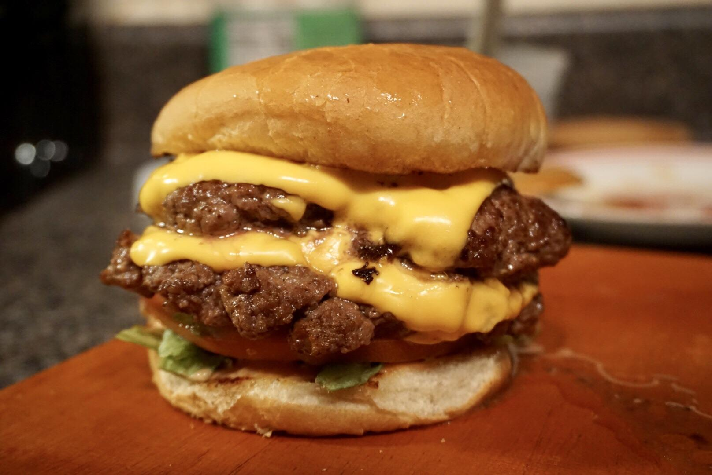

Cheeseburger

Diner-styled Cheeseburger
Ingredients
- 75/25 Ground Beef
- Onions
- Butter
- Cheese
- Buns
Steps
- Add butter in pan on medium
- Add diced onions with salt and pepper throughout
- Remove onions when browned and put in bowl for later
- Add butter in pan on medium-high
- Scoop ice cream-sized balls of ground beef into the pan
- Season with salt and pepper thoughout cooking
- Smash the balls into patties
- Flip when browned
- Butter buns and toast them in oven or similar for 5 minutes
- Add cheese to patties
- Place patties on buns once cheese is melted, top with onions, and serve